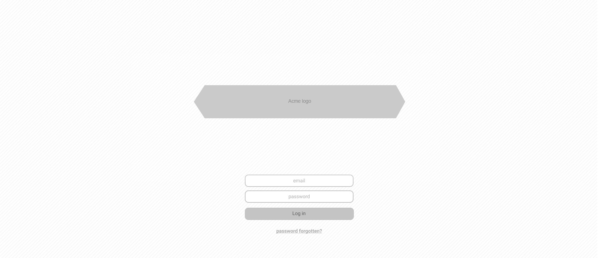
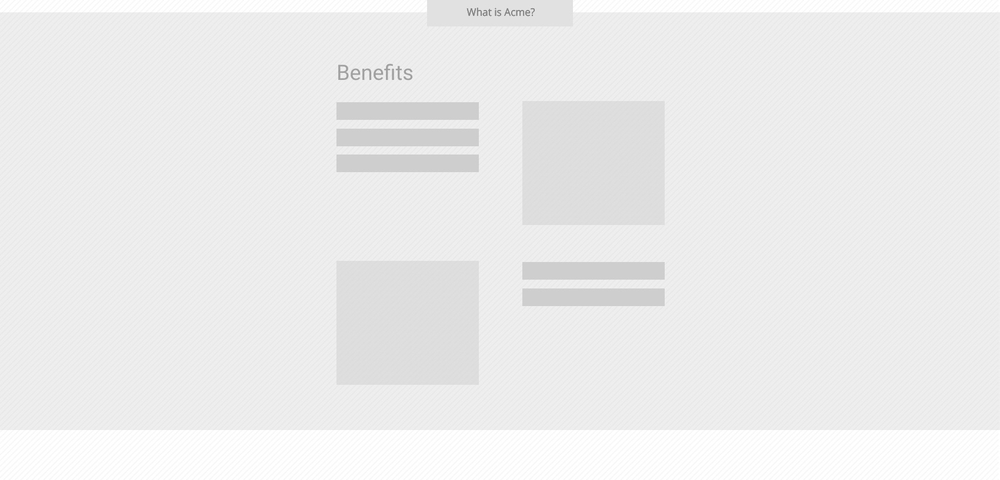

<div class="loginWrap">
    
    <map name="Map3" id="Map3">
        <area shape="rect" coords="695,590,1006,626" href="assets.html" />
    </map>
    
    <map name="Map" id="Map">
        <area onclick="swap('#loginNorm','#loginExp')" shape="rect" coords="722,-3,975,43" href="javascript:" />
    </map>

    
    

</div>

<p class="wfnote" style="top: 400px; left: 1162px;">
    Per-client branding
    with custom backgrounds?
</p>

<p class="wfnote" style="top: 950px; left: 1314px;">
    on the login page footer alway below fold / 100% height
</p>

<style>
    .loginWrap {
        width: 1700px;
        display: block;
        position: relative;
        left: 50%;
        margin: 0 auto;
        text-align: center;
        margin-left: -850px;
        background: #fff;
    }
</style>
